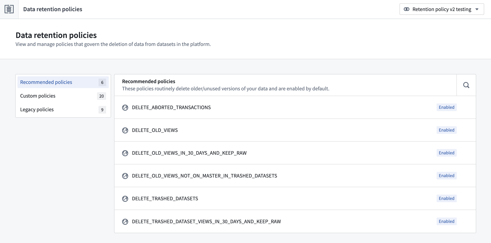

Retention in Foundry is the process that deletes data from datasets in the platform based on retention policies. The retention policy is applied for every dataset transaction that occurs. Learn more about transaction types in the platform.
The Retention Policies application is accessible from the space settings page and allows users to create and manage retention policies as part of other platform administration workflows.
The Retention Policies application supports three types of retention policies:

Learn more about how retention policies are executed.
Learn more about how retention policies are managed.